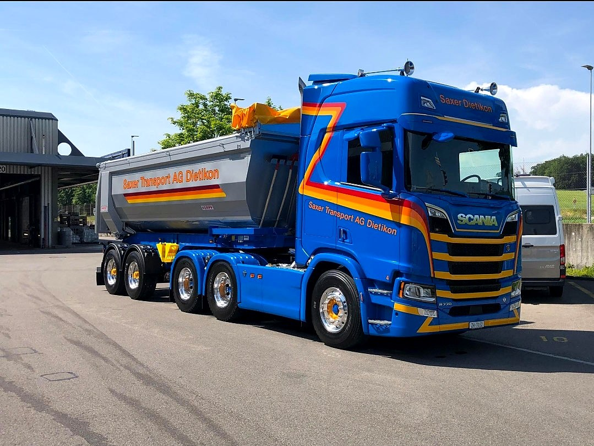
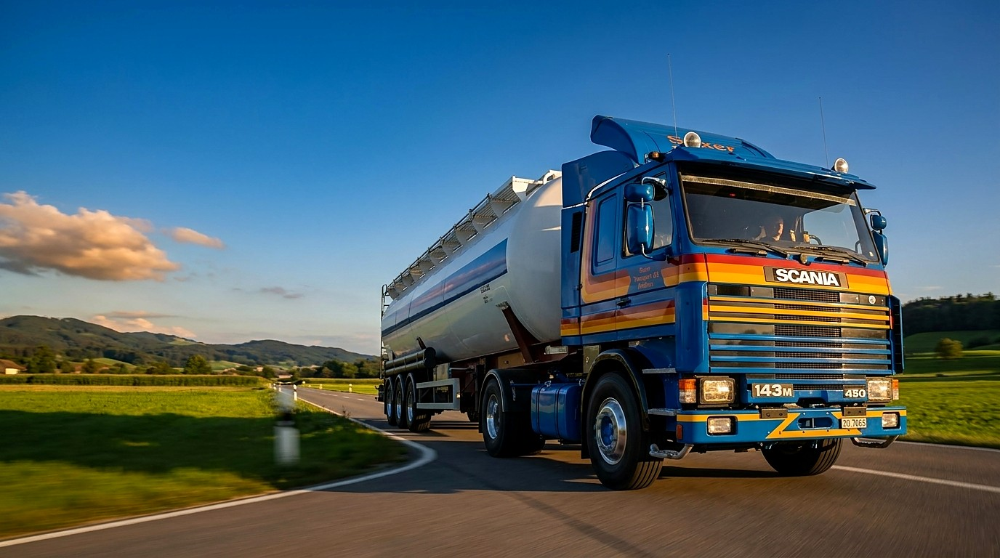
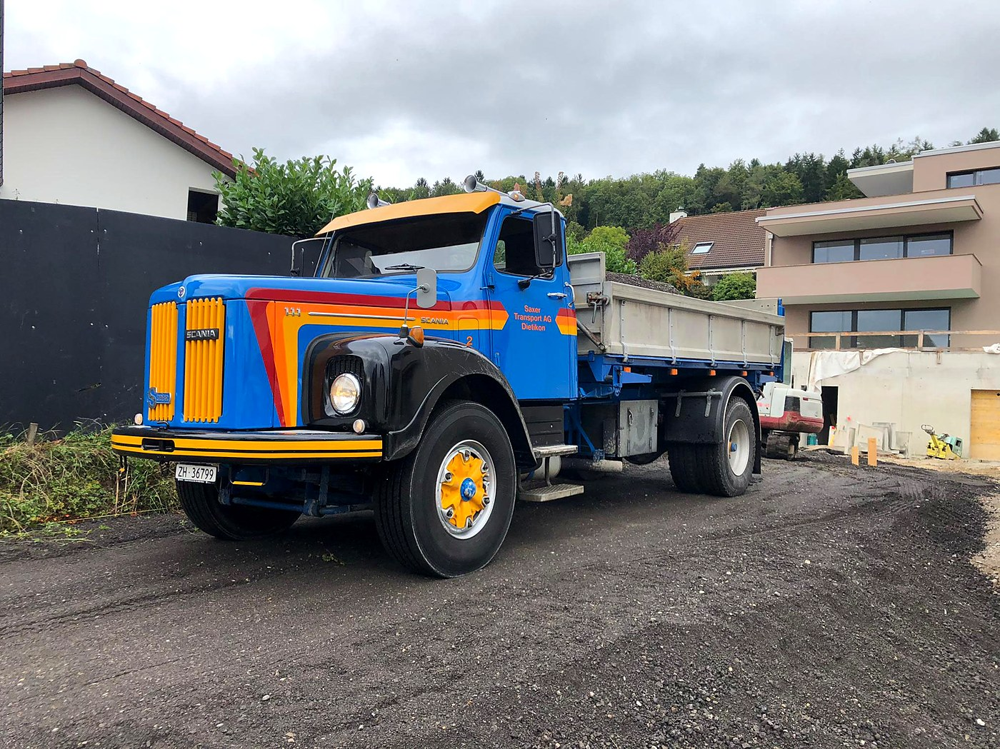
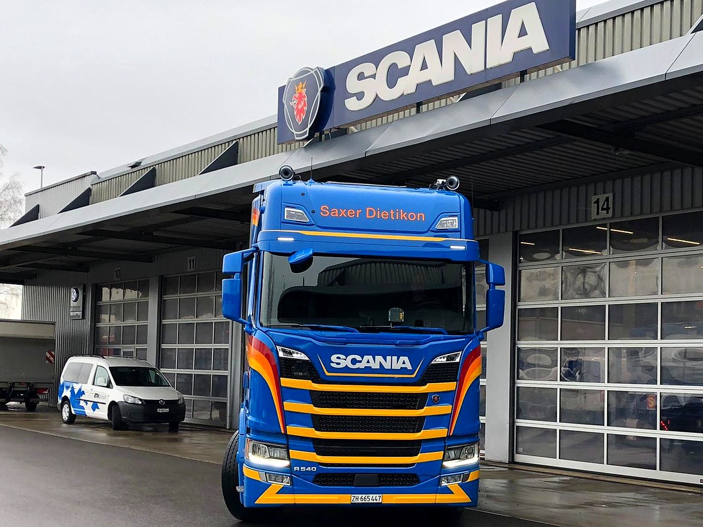
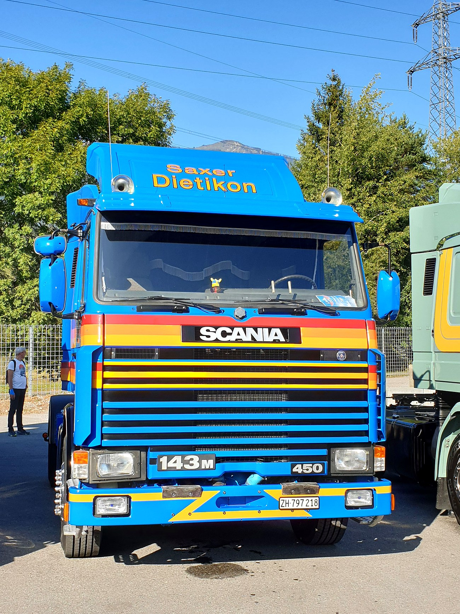

01 — Kipper
Kippertransporte
Sand, Kies, Aushub und Schüttgut – zuverlässig geladen, gekippt und entsorgt. Mit hydraulischen Kippaufliegern und Verdichter.

Die blauen Lastwagen aus dem Limmattal. Schwere Transporte von Schüttgut und Beton – seit Generationen zuverlässig unterwegs, mit einer modernen Scania-Flotte nach Euro 6d.
Vom losen Schüttgut bis zum Beton – wir bewegen, worauf der Bau wartet. Eigene Fahrer, eigene Flotte, persönlich geführt vom Inhaber.

Sand, Kies, Aushub und Schüttgut – zuverlässig geladen, gekippt und entsorgt. Mit hydraulischen Kippaufliegern und Verdichter.

Transport von Beton und Betonerzeugnissen für Baustellen in der ganzen Region – termingerecht und mit dem richtigen Gerät.

Gepflegte Scania V8 nach Euro 6d – leistungsstark, sauber und unverkennbar blau. Unser Stolz auf jeder Strasse.

Die Geschichte der Familie Saxer in Dietikon beginnt 1858. Georg Saxer-Meister verdiente seinen Lebensunterhalt als Fuhrhalter, Kutscher und Landwirt an der Bergstrasse – in den Glanzzeiten wieherten gegen 20 Pferde in der Scheune.
1931 entschloss sich Oskar Saxer zum Kauf des ersten Lastwagens. Der Betrieb wurde motorisiert, von Generation zu Generation weitergeführt und schliesslich an René Saxer übergeben – heute Inhaber und Geschäftsführer der ST Saxer Transport AG.
«Renè Saxer, Besitzer der Firma ST Saxer Transport AG, 8953 Dietikon.»
Geschäftsinhaber · Geschäftsführer
Acht Scania Sattelzugmaschinen – vom R 540 bis zum S 770 V8. Durchwegs Euro 6d, mit Kipper-Hydraulik und Verdichter.
Dazu im Bestand & als Klassiker: Scania 111 · LB 141 V8 · 143 M 450 V8.
Von der heutigen Flotte über gepflegte Oldis bis zu den ehemaligen Fahrzeugen – die blaue Saxer-Linie über die Jahrzehnte.
Wir durften Herr Tiago Baptista neu in unserem Team begrüssen. Er wird auf dem Scania XT 660 Next Generation fahren. Wir wünschen Tiago viel Freude und allzeit gute Fahrt.
Am 11. Juni 2024 durften wir in Kloten den Scania R 560 Sattelzugmaschine Euro 6d in unserer Flotte willkommen heissen. Wir wünschen Pascal allzeit eine gute Fahrt.
Am 01. Februar 2024 durften wir in Kloten den Scania S 770 Sattelzugmaschine Euro 6d mit Kipper-Hydraulik in unserer Flotte willkommen heissen. Wir wünschen André allzeit eine gute Fahrt.
Den dritten der Next Generation mit neuem Kempf Kippauflieger in Kloten in Empfang genommen. Der Scania R770 V8 mit Kipper-Hydraulik erfüllt die neueste Abgasnorm 6d. Wir wünschen unserem Chef René Saxer viel Freude und allzeit eine gute Fahrt.
Bei uns in Dietikon den neuen DAF XF 530 Sattelzugmaschine Euro 6 mit Verdichter willkommen geheissen. Wir wünschen Simon Lappert viel Freude und allzeit eine gute Fahrt.
Geschäftsführer · Inhaber
Chauffeur
Chauffeur
Chauffeur
Chauffeur
Chauffeur
Aushilfschauffeur
Aushilfschauffeur
Wir verstärken unser Team gerne mit zuverlässigen Fahrerinnen und Fahrern. Melden Sie sich – wir freuen uns auf Ihre Nachricht.
Schreiben Sie uns oder rufen Sie an – wir beraten Sie persönlich zu Ihrem Transport.
Unser Zuhause
Bergstrasse 14a
CH-8953 Dietikon ZH
Telefon · Fax
+41 (44) 740 85 42
Fax +41 (44) 740 83 05